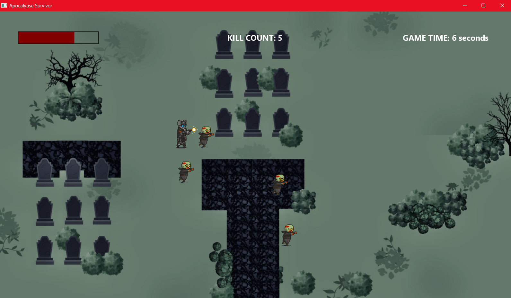
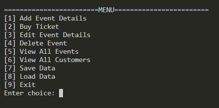
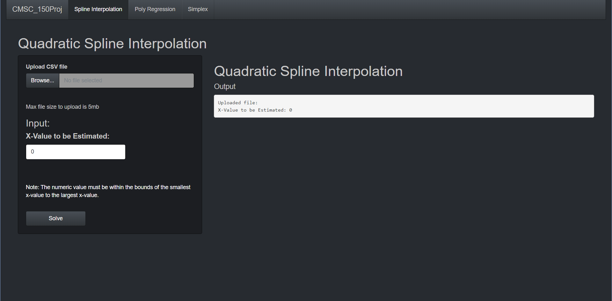

About Me
Hello, I'm James Bryan N. Gregorio, a recent graduate from the
University of the Philippines Los Baños (UPLB),
where I earned my Bachelor's degree in Computer Science.
Throughout my academic journey,
I've developed a strong foundation in various aspects of computer science,
including programming, algorithms, data structures, and software development.
I'm passionate about leveraging technology to solve complex problems
and create innovative solutions that positively impact society. I would like to
experience and learn more about programming and how company management work.
Skills
- Learned Python Programming Language
- Learned C Programming Language
- Learned R Programming Language
- Learned Java Programming Language
- Learned HTML
- Learned CSS
- Learned Photoshop
- Learned Premiere Pro
HTML and CSS profile
Shooter Game in Java Programming

Menu in C Programming

Quadratic Spline in R
